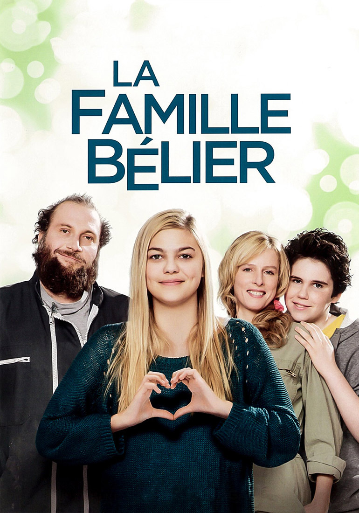
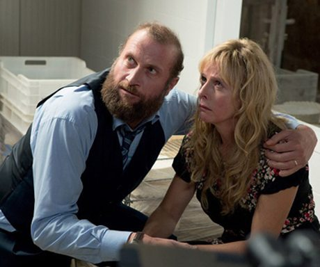
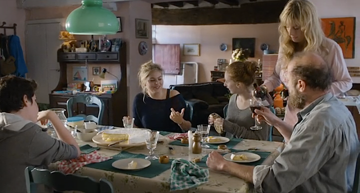
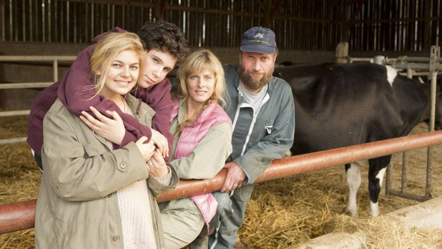
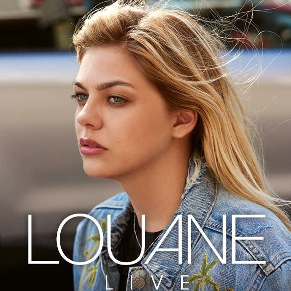

미라클 벨리에 (La Famille Bélier) - Je vole과 En chantant의 가사 해설
게시: 2019-01-24T06:30:00+09:00

'La Famille Bélier' (벨리에 가족)이라는 2014년도 프랑스 영화가 있습니다. 저는 국내 케이블 TV에서 '미라클 벨리에'라는 제목으로 방영해줄 때 아무 생각없이 보게 되었지요. 나중에라도 혹시 기회가 된다면 꼭 시청하시기 바랍니다. 진짜 재미있습니다. 줄거리를 한 줄 요약하면 '청각장애인 가족 중 유일하게 정상인 사춘기 딸이 노래를 통해 부모와 교감하고 성장한다'라는 것인데, 웃음과 감동이 모두 있는 진짜 가족 영화입니다.
그런데 가족 영화라고 해서 이걸 자녀분과 보시면 그게 또... 좀 민망하실 겁니다. 가족 영화치고는 성적인 내용도 꽤 나오거든요. 저는 관광차 프랑스에 한 일주일 정도 밖에 가보지 않은 프알못에 불과합니다만, 이 영화를 보고 프랑스 사람들의 가치관에 대해 굉장히 충격을 받았습니다.
이제 초딩인지 중딩인지 정도의 어린 남동생이, 누나 친구와 러브러브를 하다가 라텍스 알러지로 쓰러지는 장면이 나오기도 하고, 사춘기 딸에게 아빠가 '너 때문에 엄마하고 러브러브도 못했쟎아' 라는 핀잔을 주기도 하고, 심지어 학예회에서 학생들이 부르는 노래 가사에도 창녀라는 단어가 나오지를 않나 '그 여자와 10번을 했어' 라는 무용담이 나오질 않나... 충격 그 자체였습니다.
그런데 가장 충격적인 부분은 어느 장면에서의 엄마의 대사였습니다. (정확하게는 수화 대사였습니다.) 주인공 소녀인 폴라는 부모 몰래 파리의 라디오 프랑스 오디션을 보기 위해 노래 연습을 하느라 부모 일을 제대로 돕지 못했고, 결국 그 때문에 안 좋은 일이 발생하여 가족 모두가 심란한 상황이 되어 버립니다. 그때 감정이 북받친 엄마가 울면서 폴라에게 '네가 태어났을 때 너에게는 청각장애가 없다는 것을 알고 울었단다' 라고 말합니다. 저는 이때 '우리 애는 정상이라서 너무 다행이라고 기뻐서 울었나 보다'라고 지레짐작을 했는데, 그게 아니더라구요. 이어지는 엄마 대사는 이랬습니다.
"난 청각장애인이 아닌 사람들을 견딜 수가 없어. 그런데 내 딸이 정상인이라니 !"
세상에 ! 우리나라 부모로서는 정말 상상하기 어려운 사고 방식 아닌가요 ? 하긴 이 벨리에 가족은 폴라를 제외하고는 남동생까지 모두 청각장애를 가지고 있지만, 또 시골 마을에서 작은 목장을 하며 치즈를 만들어 장에 내다 파는 서민 가정이지만, 딱히 빈곤에 시달리지도, 전혀 차별을 받지도 않고 또 우울해하지도 않습니다. 심지어 아빠는 지역 사회 시장으로 출마까지 합니다. 역시 선진국 프랑스라서 그런가 봐요.

(문제의 그 장면. 여기서 또 놀라운 점은 아빠도 엄마 위로에만 신경을 써서 남편 노릇만 할 뿐, 딸을 야단친다거나 반대로 엄마를 비난하는 등의 소위 가부장적인 모습은 전혀 없다는 것.)

(폴라 옆의 소녀는 그 앞에 앉은 폴라의 어린 남동생과 러브러브를 감행하는 폴라의 친구입니다.)

엄마의 저 대사는 무엇보다 개인을 더 중요시하는 프랑스적인 마인드를 그대로 보여주는 부분입니다. 국가나 민족은 커녕 가족이나 자식을 위해서라도 자기 자신을 희생한다는 것이 없는 모양이에요. 그게 우리에게는 굉장히 충격적인 부분이지만, 그게 꼭 나쁘게만 느껴지지는 않습니다. 제가 살면서 보니까, 이 세상에 진짜 나쁜 일들은 대부분 '다른 사람들에게 희생을 강요하는 사람들' 때문에 일어나더라구요. 그 누구도 희생을 강요당하지 않고, 또 희생할 필요도, 희생을 강요할 수도 없는 사회가 진짜 좋은 사회라고 생각됩니다. 그렇게 개인을 소중히 여기는 사람들에게 예전에 박통 시절 제가 국민학교 다니던 박통 시절 모든 학생이 외워야했던 '우리는 민족 중흥의 역사적 사명을 띠고 이 땅에 태어났다...'라는 문구를 보여준다면 '이게 무슨 신박한 개소리인가'라며 비웃음을 당할 것 같습니다.
물론 아무리 그런 프랑스 사람들에게도, 가족이란 그렇게 개인주의만 내세울 수 있는 존재는 아닌가 봐요. 폴라도 가족 중 유일한 비장애인인 자기가 파리로 떠나버리면 남은 가족은 어떻게 하나 하며 갈등합니다. 특히 가족들은 모두 청각장애인이니, 폴라가 부르는 노래가 얼마나 훌륭한지, 가사가 어떤 것인지 가족은 전혀 이해를 못하기 때문에 더욱 갈등할 수 밖에 없습니다.
노래가 꿈인 정상인 딸과 청각장애인 부모와의 본질적 부조화는 학예회에서 가장 극적으로 그려지는데, 이 부분에서 감독의 연출 능력과 대담성이 아주 잘 드러납니다. 영화 초반부터, 폴라는 어느 남학생과 학예회에서 부를 듀엣곡을 연습하면서 썸을 타는데, 이 노래가 거의 영화의 주제곡입니다. 그런데, 폴라의 엄마아빠가 참석한 학예회에서, 정작 폴라와 남친이 듀엣곡을 부를 때는, 초반 4~5초만 그 아름다운 노래를 들려주고, 그 뒤부터는 철저하게 엄마아빠의 관점에서 영화를 보여줍니다. 즉, 무음처리를 해버린 것입니다. 엄마아빠는 딸이 부르는 노래를 들을 수 없어 답답해하는데, 주변을 둘러보니 다른 학부모들은 이 한쌍의 노래에 황홀해하고 너무 감동하여 눈물을 흘리기도 합니다. 노래가 끝나자 사람들이 기립박수를 치는데, 엄마아빠는 어리둥절해하며 그저 영혼없는 박수만 따라치지요. 이거 분명히 음악 영화인데, 주제곡이나 다름없는 곡을 무음처리해버리다니, 정말 대담하지 않습니까 ?
이 영화의 클라이막스는 주인공 폴라가 라디오 프랑스의 오디션에서 노래 부르는 장면입니다. 이 영화에 사용되는 음악은 대부분 70년대의 프랑스 인기 가수 미쉘 사두(Michel Sardou)라는 중년 남자 가수의 히트곡입니다. 오디션에서도 폴라가 사두의 Je vole (영어로는 I fly)이라는 노래를 부르겠다고 하자, 심사위원들은 너무 흘러간 노래라고 약간 조소를 하게 되지요. 그런데 노래가 끝난 뒤, 심사위원들은 '선곡이 매우 좋았다'라며 칭찬을 하게 됩니다.
왜 그러냐고요 ? 이 노래를 부를 때 폴라가 어떻게 하는지 아래의 영상을 보시면 아시게 됩니다. 그러나 먼저 이 노래 가사를 아셔야 합니다. 그래야 그 영화 장면이 감동으로 다가옵니다.

(주인공 폴라 역을 맡은 96년생 여가수 루안(Louane)은 프랑스판 오디션 쇼인 'The Voice'에 출연해서 6~7위 정도를 했습니다. 이 영화에 발탁되어 아름다운 노래 못지 않은 명연기를 펼쳐, 2015년 세자르 상을 수상했습니다. 원래 꽤 복스럽게 생긴 스타일인데 역시 공연용 포스터에서는 날씬해보이는 얼짱 각도로 찍었군요.)

La famille Bélier 2014 "Je vole" (저는 날아가요)
Mes chers parents je pars
Je vous aime mais je pars
Vous n'aurez plus d'enfants
Ce soir
사랑하는 엄마아빠, 저 떠나요
엄마아빠를 사랑하지만 그래도 저는 떠나요
엄마아빠는 이제 아이를 잃는 거에요
오늘 저녁에요
Je ne m'enfuis pas je vole
Comprenez bien je vole
Sans fumée sans alcool
Je vole, je vole
저는 도망치는게 아니라 날아가는 거에요
제가 날아가는 것을 이해해주세요
담배도 술도 안하지만
저는 날아가요
Elle m'observait hier
Soucieuse, troublée, ma mère
Comme si elle le sentait
En fait elle se doutait
Entendait
엄마는 어제 날 관찰하며
걱정하고 속상해했지요 우리 엄마
마치 그걸 느낀 것처럼요
사실 엄마는 의심스러웠던 거에요
들으면서도요
J'ai dit que j'étais bien
Tout à fait l'air serein
Elle a fait comme de rien
Et mon père démuni
A souri
저는 제가 괜찮다고
아주 차분하다고 말했지만
엄마는 전혀 그렇지 못했어요
아빠는 그저 힘없이
미소지었지요
Ne pas se retourner
S'éloigner un peu plus
Il y a gare une autre gare
Et enfin l'Atlantique
돌아보지 말아요
조금 더 멀리 보내요
한 정거장, 또 한 정거장 지나
마침내 대서양까지 왔어요
Mes chers parents je pars
Je vous aime mais je pars
Vous n'aurez plus d'enfants
Ce soir
사랑하는 엄마아빠, 저 떠나요
엄마아빠를 사랑하지만 그래도 저는 떠나요
엄마아빠는 이제 아이를 잃는 거에요
오늘 저녁에요
Je ne m'enfuis pas je vole
Comprenez bien je vole
Sans fumée sans alcool
Je vole, je vole
저는 도망치는게 아니라 날아가는 거에요
제가 날아가는 것을 이해해주세요
담배도 술도 안하지만
저는 날아가요
Je me demande sur ma route
Si mes parents se doutent
Que mes larmes ont coulés
Mes promesses et l'envie d'avancer
떠나며 저는 스스로에게 물어요
혹시 엄마아빠가 걱정하는지
내가 울고 있는지
내 약속과 발전하려는 갈망을요
Seulement croire en ma vie
Tout ce qui m'est promis
Pourquoi, où et comment
Dans ce train qui s'éloigne
Chaque instant
오직 내 삶을 믿어요
내게 약속된 모든 것을요
왜, 어디에, 그리고 어떻게를요
멀어져가는 이 기차 안에서
매순간마다요
C'est bizarre cette cage
Qui me bloque la poitrine
Je ne peux plus respirer
Ça m'empêche de chanter
이 새장은 참 이상해요
제 가슴을 막거든요
더 숨을 쉴 수가 없어요
제가 노래할 수 없게 만들어요
Mes chers parents je pars
Je vous aime mais je pars
Vous n'aurez plus d'enfants
Ce soir
사랑하는 엄마아빠, 저 떠나요
엄마아빠를 사랑하지만 그래도 저는 떠나요
엄마아빠는 이제 아이를 잃는 거에요
오늘 저녁에요
Je ne m'enfuis pas je vole
Comprenez bien je vole
Sans fumée sans alcool
Je vole, je vole
저는 도망치는게 아니라 날아가는 거에요
제가 날아가는 것을 이해해주세요
담배도 술도 안하지만
저는 날아가요
Lalalalalala
Lalalalalala
Lalalalalala
Je vole, je vole
라라라라
라라라라
라라라라
저는 날아가요
이 노래도 좋지만, 사실 이 영화에서 가장 마음에 드는 노래는 아래의 En chantant (노래를 부르며)에요. 이것도 물론 사두의 옛 노래입니다. 저는 이 노래를 듣고 '아, 정말 프랑스어는 정말 아름답구나 !'라고 느꼈습니다. 그런데 사두가 부르는 원곡을 들어보니, 그게 아니라 그냥 저 루안(Louane)이라는 여자 아이의 목소리가 좋은 것이더군요. 꼭 들어보세요. 정말 예쁜 노래입니다. 가사는 좀 충격적인 부분도 있지만요.

Quand j'étais petit garçon,
Je repassais mes leçons
En chantant
내가 어린 소년일때
난 공부를 하며
노래를 불렀어
Et bien des années plus tard,
Je chassais mes idées noires
En chantant.
몇 년 뒤에
나쁜 생각을 쫓아낼 때도
노래를 불렀지
C'est beaucoup moins inquiétant
De parler du mauvais temps
En chantant
훨씬 안심이 되거든
고약한 날씨 이야기할 때도
노래를 부르면 말이야
Et c'est tellement plus mignon
De se faire traiter de con
En chanson.
그리고 훨씬 더 귀여워
바보 취급을 받더라도
노래 속에서라면 말이야
La vie c'est plus marrant,
C'est moins désespérant
En chantant.
인생은 더 즐거워
훨씬 견딜만 해
노래를 부르면 말이야
La première fille de ma vie,
Dans la rue je l'ai suivie
En chantant.
내 인생 첫사랑 소녀를
길거리에서 따라갈때
노래를 불렀어
Quand elle s'est déshabillée,
J'ai joué le vieil habitué
En chantant.
그녀가 옷을 벗을 때
난 익숙한 18번 곡을
노래했었어
J'étais si content de moi
Que j'ai fait l'amour dix fois
En chantant
난 기분이 너무 좋아서
사랑을 10번이나 했지 뭐야
노래를 부르며 말이야
Mais je ne peux pas m'expliquer
Qu'au matin elle m'ait quitté
Enchantée.
하지만 난 자신할 수는 없었어
아침에 그녀가 떠나갈때
내게 홀딱 반했 채였는지 말이야
L'amour c'est plus marrant,
C'est moins désespérant
En chantant.
사랑은 더 즐거워
훨씬 견딜만 해
노래를 부르면 말이야
Tous les hommes vont en galère
À la pêche ou à la guerre
En chantant.
사람들은 모두 배를 타고 떠나
어선이건 군함이건
노래를 부르면서 말이야
La fleur au bout du fusil,
La victoire se gagne aussi
En chantant.
총구에 꽃을 꽂고도
승리를 거둘 수 있어
노래를 부르면 말이야
On ne parle à Jéhovah,
À Jupiter, à Bouddha
Qu'en chantant.
여호와나 주피터, 부처에게
말을 걸 수는 없지만
노래할 때는 가능해
Quelles que soient nos opinions,
On fait sa révolution
En chanson.
우리 사상이 뭐든간에
각자의 혁명을 벌이는 거지
노래를 부르면 말이야
Le monde est plus marrant,
C'est moins désespérant
En chantant.
세상은 더 즐거워
훨씬 견딜만 해
노래를 부르면 말이야
Puisqu'il faut mourir enfin,
Que ce soit côté jardin,
En chantant.
사람은 결국 죽는데
그게 정원 옆이었으면 해
노래를 부르면서 말이야
Si ma femme a de la peine,
Que mes enfants la soutiennent
En chantant.
내 와이프가 슬퍼하면
내 아이들이 그녀를 부축해주길 바래
노래를 부르면서 말이야
Quand j'irai revoir mon père
Qui m'attend les bras ouverts,
En chantant,
내가 아버지를 다시 보러 갈 때
아버지는 양팔을 활짝 펴고 날 기다릴텐데
노래를 부르면서 말이야
J'aimerais que sur la Terre,
Tous mes bons copains m'enterrent
En chantant.
정말 그래줬으면 하는데
내 좋은 친구들이 다 모여 날 묻어주면 좋겠어
노래를 부르면서 말이야
La mort c'est plus marrant,
C'est moins désespérant
En chantant.
죽음도 더 즐거워
훨씬 견딜만 해
노래를 부르면 말이야
Quand j'étais petit garçon,
Je repassais mes leçons
En chantant
내가 어린 소년일때
난 공부를 하며
노래를 불렀어
Et bien des années plus tard,
Je chassais mes idées noires
En chantant.
몇 년 뒤에
나쁜 생각을 쫓아낼 때도
노래를 불렀지
C'est beaucoup moins inquiétant
De parler du mauvais temps
En chantant
훨씬 안심이 되거든
고약한 날씨 이야기할 때도
노래를 부르면 말이야
Et c'est tellement plus mignon
De se faire traiter de con
En chanson
그리고 훨씬 더 귀여워
바보 취급을 받더라도
노래 속에서라면 말이야